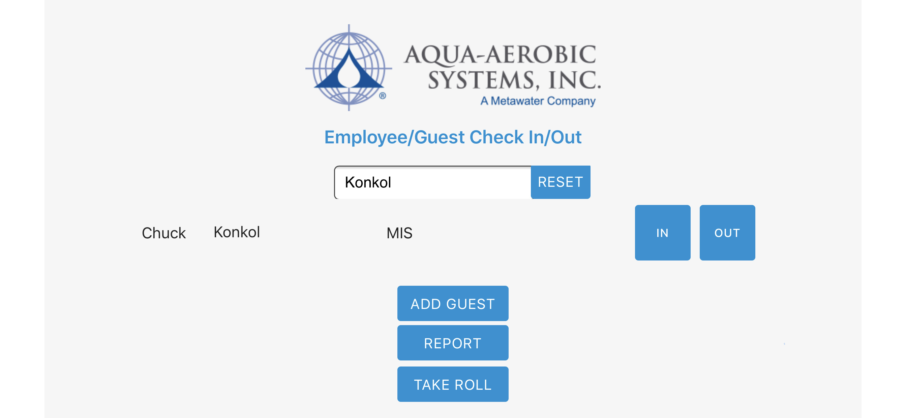
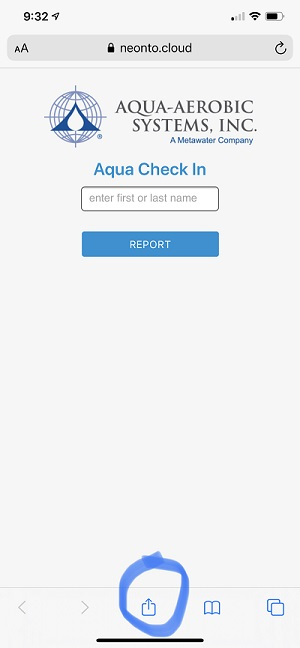
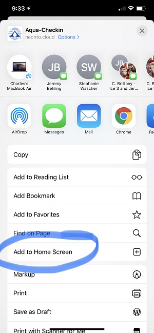
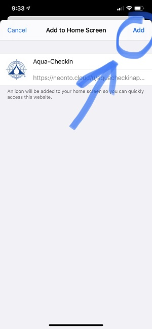
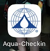

Aqua-Checkin App
The Aqua-CheckIn App helps Aqua employees easily check-in each morning from their computer, phone or tablet.
The report created from the Aqua-CheckIn App will be used to account for all Aqua employees in an emergency evacuation.
How to use Aqua-Checkin App
- Once app loads begin typing in your first or last name in textbox until your name appears
- Tap/Click IN or OUT button
- That’s it!
How to view Aqua-Checkin App Report
- Once app loads click on the Report button
- The report will only show checkins for tha day
How to setup Aqua-Checkin App
Computer/Laptop
- Open https://aquacheckin.github.io from the Chrome web browser
Either bookmark webpage or follow steps below to save as desktop shortcut.
- Click the Chrome menu on the browser toolbar
- Select More Tools
- Select Createshortcut
- Click Create
- You should have a new shortcut on your desktop titled: Aqua-Checkin
iPhone
Best viewed if phone is in landscape mode.
- Open https://aquacheckin.github.io from Safari web browser
Either bookmark webpage or follow steps below to save as homescreen shortcut.
See Picture Steps below on how to add to iPhones home screen
- Tap arrow icon on bottom of iphone (see circled icon)

- Tap Add to Home Screen (see circled icon)

- Tap Add (see circled icon)

- You should now see the Aqua-Checkin icon on your iPhones home screen! (see image below)

Android
Best viewed if phone is in landscape mode.
- Open https://aquacheckin.github.io from the Chrome web browser
Either bookmark webpage or follow steps below to save as homescreen shortcut.
- Tap on the Menu button. The looks of the Menu button will depend on your device; usually it’s an app button that looks like
three horizontal lines stacked on each other, or it could be accessed through a hardware button on your phone.
- Tap Add to Home Screen, Done! A shortcut to the website will be added to your home screen.